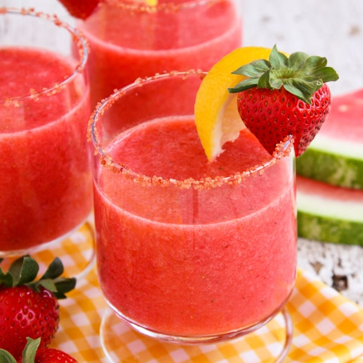

Frozen Strawberry Lemonade Smoothie

INGREDIENTS
- 1 handful of frozen strawberries
- 1/2 of a lemon a lemon juice
- about 3/4 cup of ice (preferable)
- 2 packets of Truvia (all natural sweetener)
- about 3/4 cup of water
DIRECTIONS
- Take frozen strawberries and ice put them in the blender
- add juice half of a lemon into the blender
- I add 2 packets of Truvia (or any of your choice sweetener) You could substitute 2 teaspoons of white sugar
- Then I add water until it almost covers the strawberries
- Adjust water and ice to your preferences on thickness and sweetness. Blend well.serve